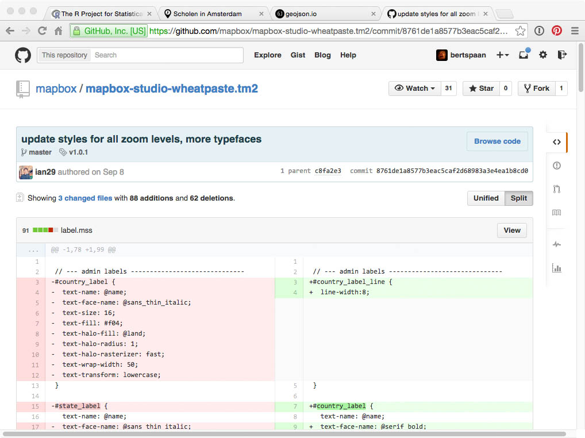
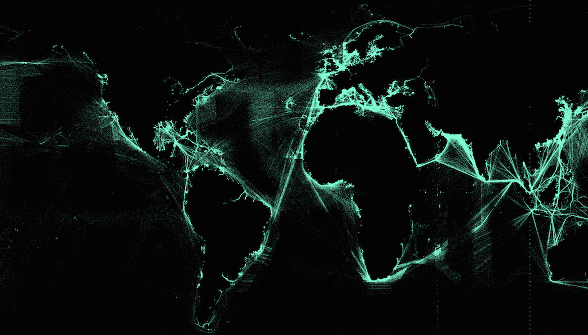
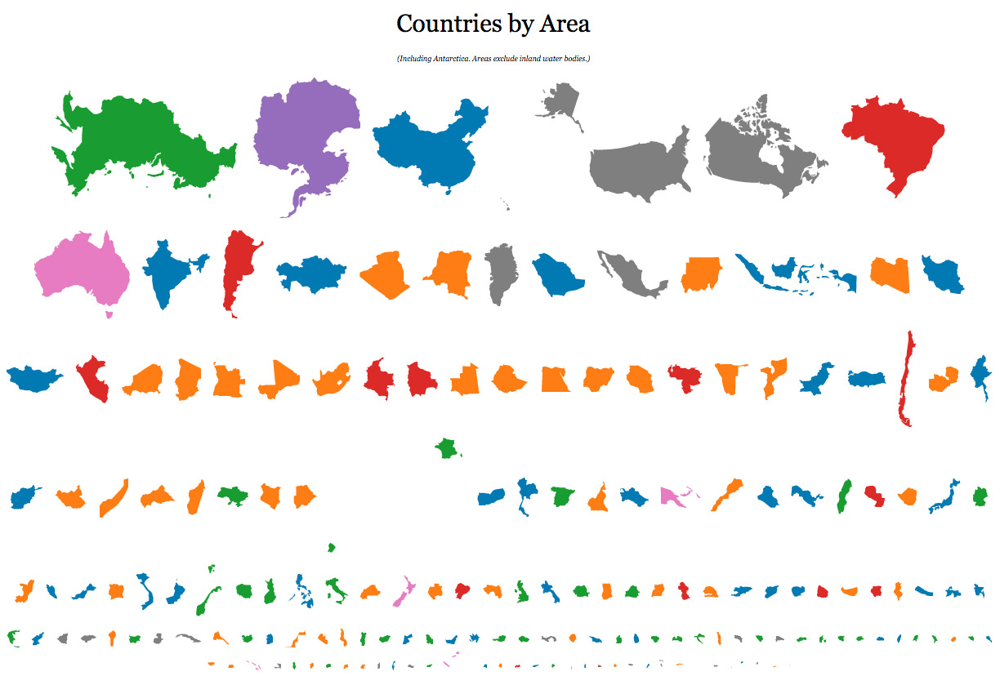
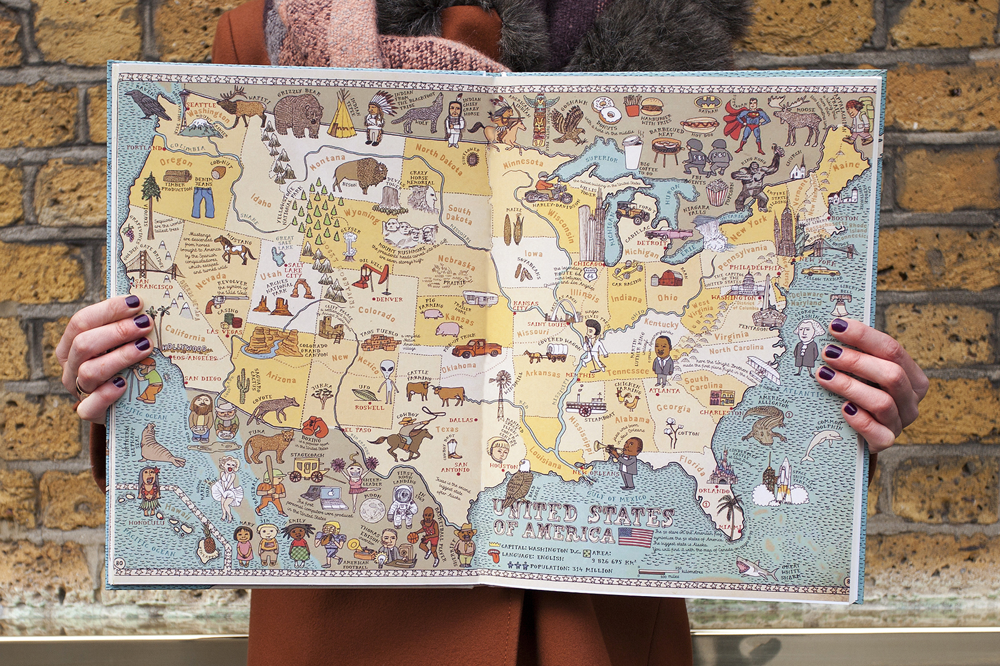
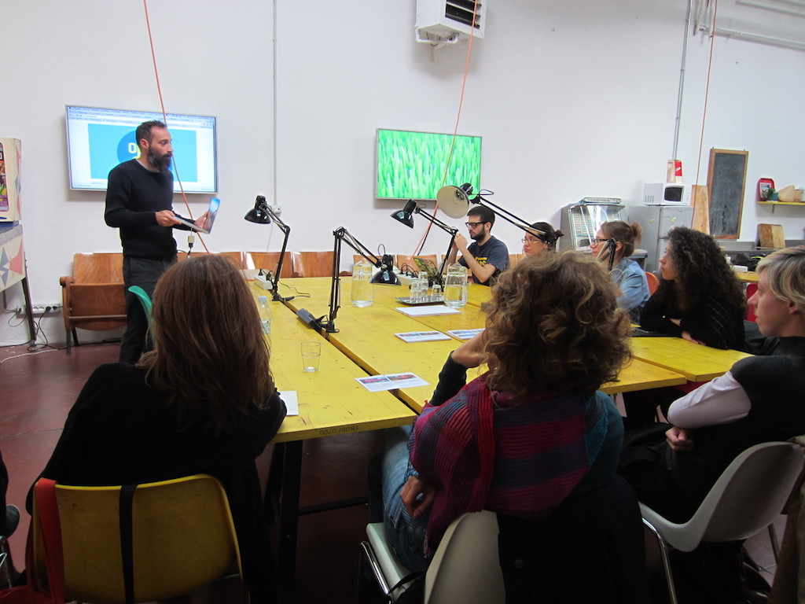

Maptime Milano
Per seguire la presentazione:
SlidesInternet:
SSID: "polimi",
psswd: chiedere a @danielevilla
Benvenuti!
Come nasce Maptime?

quando è nato maptime?

Maptime Chapters
Maptime Milano
La vostra "Map Hack Night" preferita!!! ● (nonchè unica)
Cos'è Maptime?
da why maptime
- Helping each other
- Learning from and teaching together
- Making a safe space for learning
- Making maps more democratic
- Bringing the Geo community together
- Having fun!
Cosa non è Maptime
da why maptime
- Being too technical
- Sales pitches
- Arguing
- Judgement
- Getting other people to do your work for free ←NO
- Having no fun :(
Riassumendo:
Questa sera:
1. Introduzione
2.
Chi siete ?
3.
Web-Map 101
Prossimamente:
Guest speakers
Leaflet

Leaflet

Leaflet
Tilemill > Mapbox Studio
&
CartoCSS

Illustrator

Mapbox Studio2

Mapbox Studio3
Mapbox Studio4

supermario mapbox
OpenStreetMap

OpenStreetMap

OpenStreetMap

OpenStreetMap

OpenStreetMap
Missing Maps Mapathon

missingmaps1

missingmaps2
QGIS

QGIS
PostGIS

PostGIS
Geospatial (Open)data

Geospatial data

GeoJSON
GitHub + GitHub Pages
GitHub

GitHub
Data Visualization
data viz
D3.js

Jason Davies
Jason Davies2
Hand-drawn maps
Hand-drawn maps
Arduino

arduino
Da Gennaio:

png

png
png

png

png
Grazie per l'attenzione!
Domande?!
Riferimenti: